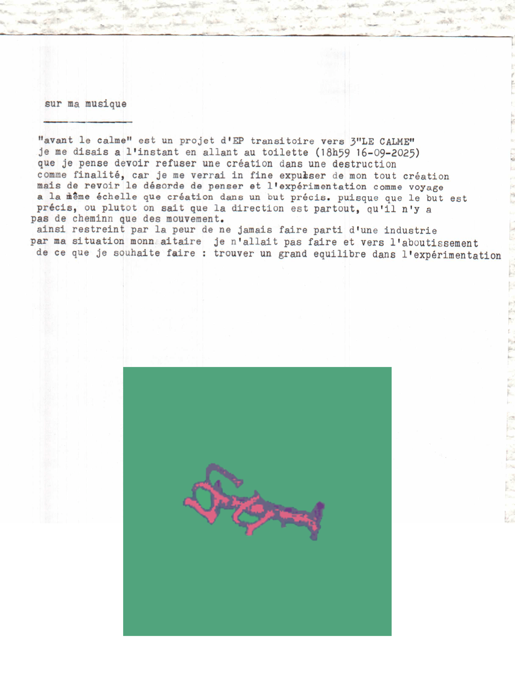

Tout voir
Catégorie: jeune chegg*
Catégorie: avec mes amis*
2025
avant le calme pt.4 (août 2025)avant le calme pt.3 (juillet 2025)
ARCHAPLUGG (septembre 2025)
avant le calme pt.2 (juillet 2025)
avant le calme pt.1 (juin 2025)
EPMMPAÏS1 (mai 2025)
freestyle MM (mars-mai 2025)
jeune alchimiste (2025)
2024
Cheggtape volume 2 (2024)champignon triste (2024)
LA FÊTE AUX CHAMPIGNONS (2024)
placard ouvert (2024)
LRISLATN (2024)
2023
Cheggtape volume 1 (2023)3EPs perdus (2023-2024)
blips and some stuff (AOUT 2023)
ambiant occlusion (JUILLET - AOUT 2023)
new times (JUIN 2023)
shitpost EP (MAI 2023)
monade hiéroglyphique mixtape (FEVRIER 2023 - JUIN 2023)
2022
marquer l'histoire comme john dee (NOVEMBRE 2022 - MAI 2023)2021
mixtape - unnamed yet (AOUT 2021 - DECEMBRE 2021)Genese (AVRIL 2021 - DECEMBRE 2022)
avant le calme pt.4 (août 2025)
enregistré en: août 2025
publié en: octobre 2025

celui la je l'ai fait en genre 2 jours j'avais juste envie d'enchainer vraiment. juste de l'experimentation encore et toujours. jai plus de place sur mon soundcloud fuck
écouter sur les plateformes!
Plus d'infos...
référence


extrait de la revue metachim2 ! qui parle du projet
extrait de la revue metachim3 ! qui parle aussi du projet
tracklisting
| n° | nom | durée |
| 1 | immortel comme | 1:10 |
| 2 | jamais seul | 2:06 |
| 3 | mesPropresMETHODEs | 1:36 |
| 4 | système chegg | 1:17 |
| Total | durée | 6:09 |
avant le calme pt.3 (juillet 2025)
enregistré en: juillet 2025
publié en: octobre 2025


projet sorti le 6 octobre dans la continuité des petits EPs que je sors.
plus j'y pense plus je veux sortir tout ces sons qui sont des résultats de test
dans le peu de temps que je dédie au son. plus je les sors plus je me dis
que cest le début d'experimentation vraiment pour aller plus loin. j'avais besoin
de tout petits formats.
écouter sur soundcloud!
écouter sur les plateformes!
Plus d'infos...
Clips
ARCHAPLUGG (septembre 2025)

archaplugg musique.
réalisé, produit et interprété par jeune chegg et WWAH.
Plus d'infos...
avant le calme pt.2 (juillet 2025)
enregistré en: juillet 2025
publié en: septembre 2025


deuxieme EP rap dans la série "avant le calme", javais besoin je pense
de séparer ces sons dans différents petits projets que j'allais dévoiler
au fur et a mesure. y'a vraiment des sons enregistré y'a quelques mois
rafistolé longtemps après et des trucs plus récents. Sorti le 15 septembre.
écouter sur soundcloud!
écouter sur les plateformes!
Plus d'infos...
Clips
avant le calme pt.1 (juin 2025)
enregistré en: juin 2025
publié en: septembre 2025


premier EP d'une série d'EP d'experimentation, dans la suite de la volonté
de trouver des moyens de faire de la musique-archive métachimériste. Sorti le 1er septembre.
écouter sur soundcloud!
écouter sur les plateformes!
Plus d'infos...
Clips
EPMMPAÏS1 (mai 2025)


on s'est branché avec mon gars païs pour faire de la musique sur deux jours, on s'est fait kiffé. résultats de nos gamberge, tu connais. faire de la musique a plusieurs. j'adore cette aspect très brute du projet, fait rapidement.
écouter sur soundcloud!
Plus d'infos...
freestyle MM (mars-mai 2025)


pas eu beaucoup de temps pour faire de la musique mais j'avais envie quand même de sortir des trucs donc j'ai juster expérimenté tranquillement dans ce projet. l'évolution sera marqué dans le marbre, chaque son est une pierre à un plus grand édifice. on reste branché
écouter sur soundcloud!
écouter sur les plateformes!
lire les paroles sur genius!
Plus d'infos...
Clips
jeune alchimiste (2025)
enregistré en: janvier 2025
publié en: mars 2025


3EME PROJET PUTAIN DE MERDE. DE BASE IL SAPPELAIT "RIEN A FOUTRE DE L'INDUSTRIE" MAIS VASY JAI CHANGé D'AVIS. PUTAIN DE COVER TU CONNAIS. ON VA PAS SARRETER LA PUTAIIIN.
écouter sur soundcloud!
écouter sur les plateformes!
Plus d'infos...
2024 ▼
Cheggtape volume 2 (2024)
enregistré en: fin 2024
publié en: février 2025


Secondes Mixtape sur les plateformes. Des essaies de choses que j'aime qui rentre plus dans un mouvement et une couleur que j'aime, qui reste assez babillant.
écouter sur soundcloud!
écouter sur les plateformes!
lire les paroles sur genius!
Plus d'infos...
Clips
champignon triste (septembre 2024)

Deuxieme projet en duo dans le groupe "mushroom party" produis par moi en featuring avec @cliclicbangboom (twitter).
écouter sur soundcloud!
Plus d'infos...
LA FÊTE AUX CHAMPIGNONS (aout 2024)

Projet en duo dans le groupe "mushroom party" co-produits et en featuring avec @cliclicbangboom (twitter). sorti sur soundcloud.
écouter sur soundcloud!
Plus d'infos...
placard ouvert (aout 2024)

Premier projet d'instrumental sorti sur soundcloud et produits dans le cadre
d'une vidéo youtube.
écouter sur soundcloud!
Plus d'infos...
LRISLATN (aout 2024)


Projet en duo dans le groupe "Oznali" produis par moi en featuring avec @naluirpe (twitter).
Un prémisse au EPMM en collaboration. sorti sur soundcloud.
écouter sur soundcloud!
lire les paroles sur genius!
Plus d'infos...
2023 ▼
Cheggtape volume 1
enregistré en: 2023-2024
publié en: février 2025


Premier projet sorti sur les plateformes. Beaucoup d'experimentation que je voulais pas sortir à la base mais j'aurai été frustré de ne pas montrer ce début. Avec le coeur.
écouter sur soundcloud!
écouter sur les plateformes!
Plus d'infos...
3EPs perdus (2023-2024)

Sur un ancien PC malheureusement cramé aujourd'hui, trois petits EPs avaient été enregistré
dans les débuts de ma création musical. il me reste quelques unes de mes premières prod sauvés.
Plus d'infos...
blips and some stuff (AOUT 2023)

volonté de faire un projet fleuve, très experimental.
Plus d'infos...
ambiant occlusion (JUILLET - AOUT 2023)
projet instrumental.
Plus d'infos...
new times (JUIN 2023)
projet instrumental.
Plus d'infos...

monade hiéroglyphique mixtape (FEVRIER 2023 - JUIN 2023)
projet sensé faire suite a celui d'avant, premiere vrai prise de voix dans un morceau finit.
Plus d'infos...
2022 ▼
marquer l'histoire comme john dee (NOVEMBRE 2022 - MAI 2023)

premier vrai essai de faire un projet, projet narratif avec une voix qui accompagne l'histoire.
Plus d'infos...
2021 ▼
mixtape - unnamed yet (AOUT 2021 - DECEMBRE 2021)
Quelques premières idées de prod.
Plus d'infos...
Genese (AVRIL 2021 - DECEMBRE 2022)
entrainement sans volonté de faire un véritable projet.
Plus d'infos...